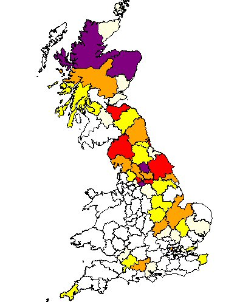
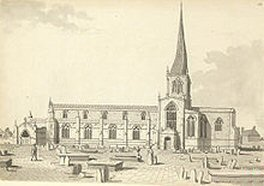
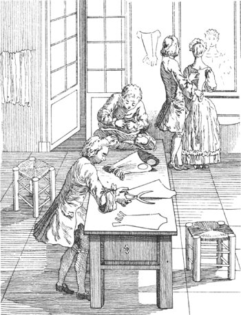
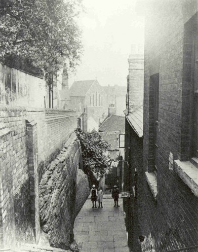
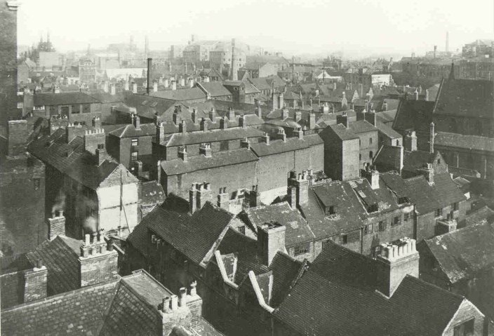

Our Noble family can trace its recent roots to the East Midlands of England and to Chesterfield, Derbyshire, in the 17th Century. We are not sure where the family originated from before this date but the 'Noble' population of Derbyshire was small and therefore it is likely that they arrived in Derbyshire from somewhere further north.

John Noble married Hannah Lee in Chesterfield in February 1655. They had five children and the oldest was a son by the name of James. James Noble was born in 1656. With his wife Marie Ridge, he fathered Richard Noble, who was baptised in Chesterfield, Derbyshire on July 24 1693. All that we know of Richard is that he grew up in Chesterfield, but he married his first wife, Esther Holland, in Sheffield in 1716. Esther gave Richard five children before her death in 1734. Richard married a second time to Mary Swift in November 1736. Richard and Mary had four children that we know about, their second son being Paul. Paul appears to have moved from Chesterfield to Derby where he practiced as a 'staymaker', or a maker of corsets. Staymaking was a specialised form of tailoring which required some knowledge of anatomy. Derby was a rapidly growing town at this time which was prospering from its burgeoning silk and hose industries and was the ideal place for Paul to establish his business.

Paul met and married Elizabeth Jolley, on 10 June 1768, at St Werburgh, Derby. Paul and Elizabeth had ten children, their second son being called John. John Noble was born in Derby in 1775 and became a shoemaker. We also know a little about John's brother Thomas, who joined the army and fought in the American War of 1812 with the 41st Foot Regiment .
John Noble married Harriett, but we have been unable to trace the marriage record. It was from this generation that the family appeared to fall on hard times and John, although a skilled shoemaker was for a number of years reliant upon the workhouse. This was something repeated by John's children and continued up to the birth of John's great-great-grandson, George, who was born in the workhouse in 1904. John and Harriett's son, Thomas Noble (named after his soldier uncle perhaps?), married Louisa Hallott in Derby in 1841 and after the birth of their third child the family moved to nearby Nottingham.

Thomas no doubt moved to Nottingham in search of work and he was employed as a silk twister. Louisa was described as a semptress. The family was to become established in Nottingham for a number of generations. Thomas and Louisa's eldest son, John married Selina Lloyd of Derby. John was employed as a boiler maker and engine driver and lived at Long Stairs, Nottingham. His son Thomas Noble was born in Narrow Marsh and became a cotton cleaner. Thomas married Mary Ann Bunting (aka Keetley). They were very poor and were in and out of the workhouse on a regular basis. Their son George Noble being born there in 1904.

George married widow Edith Ambrose (formerly Marsh) in 1925 and they had two children, Ken and Ray, in addition to Edith's daughter from her former marriage. Sadly Edith died within ten years of marriage leaving three small children without a mother.
Current Research : More research required into the Derby Noble's, particularly John Noble and Harriett. Further investigation also required into the origins of the family in Chesterfield Derbyshire.